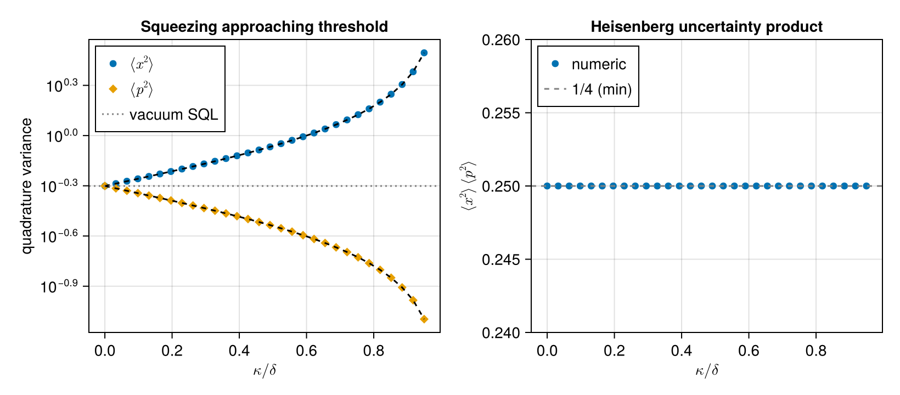
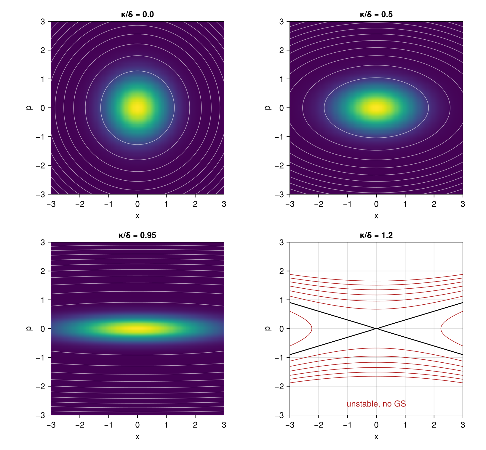

Parametric Oscillator in the Phase-Space Representation
The degenerate parametric oscillator (DPO), a single bosonic mode driven by parametric pumping at twice its frequency, is the workhorse of optical squeezing. In the rotating frame at half the pump frequency its effective Hamiltonian is
\[H = \delta\,\bigl(\tfrac{x^2 + p^2}{2}\bigr) - \tfrac{\kappa}{2}\,(x^2 - p^2) = \tfrac{\delta - \kappa}{2}\,x^2 + \tfrac{\delta + \kappa}{2}\,p^2,\]
where $\delta$ is the detuning from half the pump, $\kappa$ is the parametric drive strength, and $[x, p] = i$ are canonical quadrature operators. Below the threshold $\kappa = \delta$ the oscillator is stable but its ground state is squeezed: one quadrature variance drops below $\tfrac{1}{2}$ while the other grows above it, with the product saturating the Heisenberg bound.
This example showcases the PhaseSpace hilbert space and the canonical-commutator engine: every step uses Position and Momentum directly, without ever invoking Fock ladder operators.
Setup
using SecondQuantizedAlgebra
hp = PhaseSpace(:osc)
@qnumbers x::Position(hp) p::Momentum(hp)
@variables δ κ\[ \begin{equation} \left[ \begin{array}{c} \delta \\ \kappa \\ \end{array} \right] \end{equation} \]
Built-in canonical commutator:
commutator(x, p)\[\mathit{i}\]
Hamiltonian and Heisenberg dynamics
H = (δ - κ) / 2 * x^2 + (δ + κ) / 2 * p^2
-1im * commutator(x, H)\[\left(\delta + \kappa\right) \hat{p}\]
-1im * commutator(p, H)\[\left( - \delta + \kappa\right) \hat{x}\]
Reading off,
\[\dot x = (\delta + \kappa)\,p, \qquad \dot p = -(\delta - \kappa)\,x.\]
Combining, $\ddot x = -(\delta^2 - \kappa^2)\,x$: oscillation at normal-mode frequency $\varepsilon = \sqrt{\delta^2 - \kappa^2}$, which softens to zero at the parametric instability threshold $\kappa = \delta$. Above threshold the system runs away exponentially, and the squeezing parameter diverges.
Squeezed-state variances
Below threshold, the ground state is a single-mode squeezed vacuum. Mapping to ladder operators $a = (x + i p)/\sqrt{2}$ and applying a Bogoliubov rotation gives, after a short calculation,
\[\langle x^2 \rangle_0 = \tfrac{1}{2}\sqrt{\dfrac{\delta + \kappa}{\delta - \kappa}}, \qquad \langle p^2 \rangle_0 = \tfrac{1}{2}\sqrt{\dfrac{\delta - \kappa}{\delta + \kappa}}, \qquad \langle x^2 \rangle_0\,\langle p^2 \rangle_0 = \tfrac{1}{4}.\]
The first variance grows without bound as $\kappa \to \delta^-$ (anti-squeezed quadrature), the second shrinks to zero (squeezed quadrature), and the product stays pinned at the Heisenberg-uncertainty minimum.
Numerical verification
The package's numerical backend maps Position and Momentum onto a Fock basis via $x = (a + a^\dagger)/\sqrt 2$, $p = i(a^\dagger - a)/\sqrt 2$. We diagonalise $H$ on a wide Fock basis and read off the ground-state variances directly.
using QuantumOpticsBase, LinearAlgebra, CairoMakie
δ_val = 1.0
n_max = 60
b_fock = FockBasis(n_max)
κs = range(0.0, 0.95 * δ_val, length = 30)
var_x = Float64[]
var_p = Float64[]
for κ_val in κs
subs = Dict(δ => δ_val, κ => κ_val)
H_op = dense(to_numeric(substitute(H, subs), b_fock))
F = eigen(Hermitian(H_op.data))
ψ = Ket(b_fock, F.vectors[:, 1])
push!(var_x, real(numeric_average(x * x, ψ)))
push!(var_p, real(numeric_average(p * p, ψ)))
end
th_x(κ_val) = 0.5 * sqrt((δ_val + κ_val) / (δ_val - κ_val))
th_p(κ_val) = 0.5 * sqrt((δ_val - κ_val) / (δ_val + κ_val))
fig = Figure(size = (820, 360))
ax1 = Axis(
fig[1, 1];
xlabel = L"\kappa / \delta",
ylabel = "quadrature variance",
title = "Squeezing approaching threshold",
yscale = log10,
)
scatter!(ax1, collect(κs) ./ δ_val, var_x; label = L"\langle x^2 \rangle", marker = :circle)
scatter!(ax1, collect(κs) ./ δ_val, var_p; label = L"\langle p^2 \rangle", marker = :diamond)
lines!(ax1, collect(κs) ./ δ_val, th_x.(κs); linestyle = :dash, color = :black)
lines!(ax1, collect(κs) ./ δ_val, th_p.(κs); linestyle = :dash, color = :black)
hlines!(ax1, [0.5]; color = :gray, linestyle = :dot, label = "vacuum SQL")
axislegend(ax1; position = :lt)
ax2 = Axis(
fig[1, 2];
xlabel = L"\kappa / \delta",
ylabel = L"\langle x^2 \rangle\,\langle p^2 \rangle",
title = "Heisenberg uncertainty product",
)
scatter!(ax2, collect(κs) ./ δ_val, var_x .* var_p; label = "numeric")
hlines!(ax2, [0.25]; color = :gray, linestyle = :dash, label = "1/4 (min)")
ylims!(ax2, 0.24, 0.26)
axislegend(ax2; position = :lt)
fig
Both quadrature variances follow their closed-form predictions across the entire below-threshold range, and the uncertainty product (right) sits precisely at the Heisenberg-minimum $\tfrac{1}{4}$ throughout, so the DPO ground state is a minimum-uncertainty squeezed vacuum. As $\kappa$ approaches $\delta$, $\langle x^2\rangle$ diverges while $\langle p^2\rangle$ collapses toward zero, the dynamical signature of the parametric instability.
Phase-space portrait
All of the above is summarised cleanly in a single picture. The classical phase portrait of the rotated-frame Hamiltonian is the family of level curves $H(x, p) = \mathrm{const}$, an ellipse below threshold that elongates along the squeezed axis as $\kappa \to \delta$. Crossing threshold the coefficient $(\delta - \kappa)/2$ of $x^2$ flips sign, and the level curves become hyperbolas: bounded orbits give way to unbounded exponential trajectories. The symbolic determinant computed earlier makes this transition exact:
\[\mathrm{eig}(M) = \pm\sqrt{-\det M} = \pm\sqrt{\kappa^2 - \delta^2} = \begin{cases} \pm i\,\sqrt{\delta^2 - \kappa^2} & \text{(oscillation, } \kappa < \delta\text{)}, \\ 0 & \text{(degenerate, } \kappa = \delta\text{)}, \\ \pm\sqrt{\kappa^2 - \delta^2} & \text{(exponential, } \kappa > \delta\text{)}. \end{cases}\]
Below threshold the ground-state Wigner function of the minimum-uncertainty squeezed vacuum is the Gaussian whose covariance matrix matches the analytic variances:
\[W(x, p) = \frac{2}{\pi}\, \exp\!\left[-\frac{x^2}{2\,\langle x^2\rangle_0} - \frac{p^2}{2\,\langle p^2\rangle_0}\right], \qquad \langle x^2\rangle_0 \langle p^2\rangle_0 = \tfrac{1}{4}.\]
Overlaying both objects in a four-panel sweep across the transition makes the squeezing and the instability immediately visible:
H_class(x_val, p_val, κ_val) =
(δ_val - κ_val) / 2 * x_val^2 + (δ_val + κ_val) / 2 * p_val^2
W_gs(x_val, p_val, κ_val) =
(2 / π) * exp(
-x_val^2 / (2 * th_x(κ_val)) - p_val^2 / (2 * th_p(κ_val)),
)
κs_show = [0.0, 0.5, 0.95, 1.2]
xs_plot = -3:0.04:3
ps_plot = -3:0.04:3
fig2 = Figure(size = (820, 760))
for (i, κ_val) in enumerate(κs_show)
row, col = ((i - 1) ÷ 2) + 1, ((i - 1) % 2) + 1
local ax = Axis(
fig2[row, col]; aspect = 1, xlabel = "x", ylabel = "p",
title = "κ/δ = $(κ_val)",
)
H_grid = [H_class(xv, pv, κ_val) for xv in xs_plot, pv in ps_plot]
if κ_val < δ_val
W_grid = [W_gs(xv, pv, κ_val) for xv in xs_plot, pv in ps_plot]
heatmap!(ax, xs_plot, ps_plot, W_grid; colormap = :viridis)
contour!(
ax, xs_plot, ps_plot, H_grid;
levels = 10, color = (:white, 0.6), linewidth = 0.8
)
else
contour!(
ax, xs_plot, ps_plot, H_grid;
levels = vcat(-3:0.5:-0.5, 0.5:0.5:3),
color = :firebrick, linewidth = 0.9
)
contour!(
ax, xs_plot, ps_plot, H_grid; levels = [0.0],
color = :black, linewidth = 1.5
)
text!(
ax, 0, -2.6; text = "unstable, no GS",
align = (:center, :center), color = :firebrick
)
end
limits!(ax, -3, 3, -3, 3)
end
fig2
Top-left ($\kappa = 0$): vacuum, circular Wigner blob, circular orbits. Top-right and bottom-left: the Wigner ellipse squeezes along $p$ and stretches along $x$ as $\kappa$ climbs toward $\delta$, with the classical orbits doing the same. Bottom-right (above threshold): the saddle separatrix $H = 0$ (black) splits phase space into four hyperbolic sectors; the orbits run off to infinity along the unstable manifold. Everything in this figure (the threshold condition, the variances, the Wigner shape) came out of a canonical Position/Momentum pair and the built-in commutator engine, with no manual translation to ladder operators required.
This page was generated using Literate.jl.